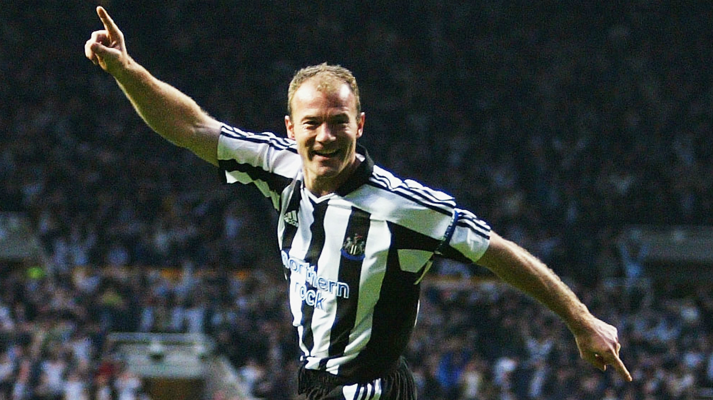
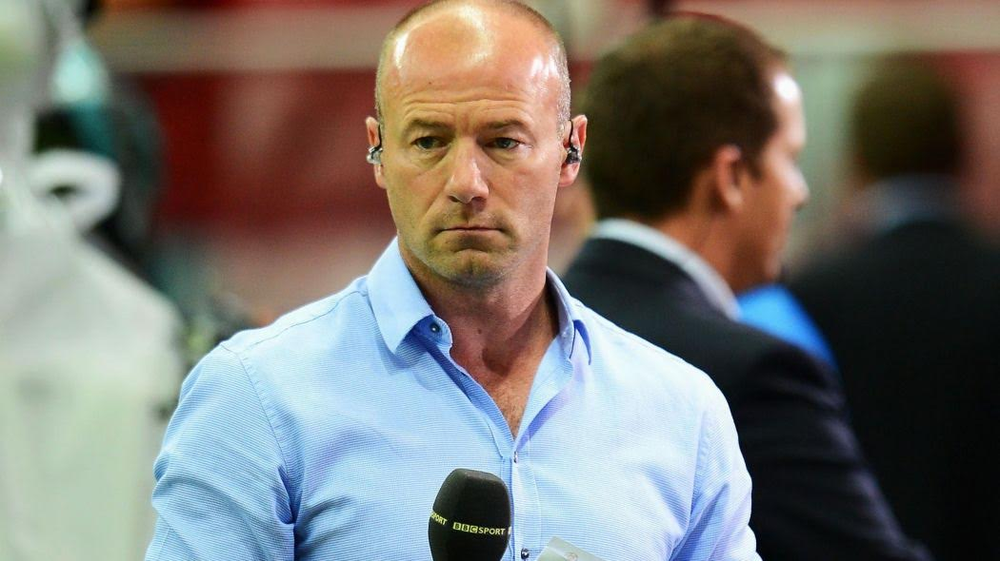
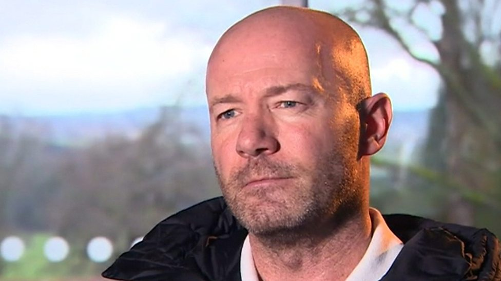
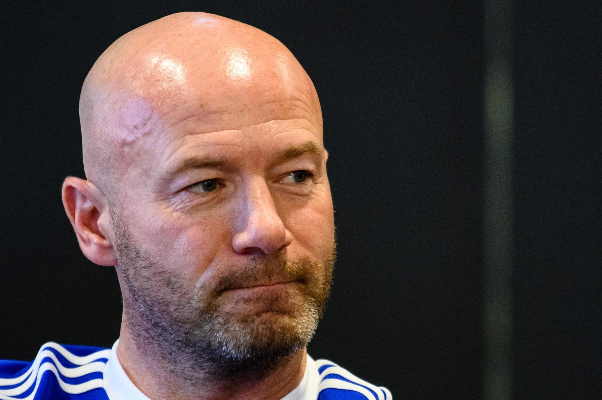

Alan Shearer is a former English professional footballer who played as a striker in the England junior and senior national team for a very long period. He has played for some popular clubs during the course of his career, some of them are - Wallsend Boys Club, Southampton and Blackburn Rovers. He was associated with the popular top tier English club, Newcastle United FC, at the time of his retirement.

Biography
ALAN SHEARER

Background
Born on 13 August 1970 in Gosforth in Newcastle upon Tyne, Shearer comes from a lower middle class family. He started his youth career while playing for a local club, Wallsend Boys. In 1986, he received a youth contract from Southampton and spent 2 years in their setup.

Senior career
Shearer made his senior professional debut for Southampton as a substitute on 26 March 1988 in a First Division match against Chelsea. His exceptional ball controlling skills soon cemented his place in the best squad of the club. He made 118 appearance for the club and scored at 23 times. In 1992, he was transferred to Lancashire based - Blackburn Rovers, for a record breaking fee of £3.6million. In his first season, he scored 16 goals in 21 matches and came into limelight. The following season, he was instrumental in the club ascend to the runners-up in Premier League, as he scored 31 goals in 40 games. He was named the Football Writers’ Association Footballer of the Year for that season. He led the team to the title of Premier League in 1994-95 season, defeating Manchester United in the finals and was named PFA player of the year. He overall played 138 games for the club and scored 112 goals. In 1996, for a world transfer record-breaking £15 million, Shearer joined his hometown club and the then league runners-up Newcastle United. He made his debut in a away game against Everton and went on to finish as the League’s top scorer in his debut season for the club. He again earned the title of PFA player of the year in 1996. In 2002, Shearer's Champions League hat-trick against Bayer Leverkusen, helped the club to move to the semi-finals of Premier League. He made a total of 303 appearances for Newcastle and scored 148 goals.

Retirement
Shearer declared his retirement with the completion of Euro 2000. He captained 34 off his 63 caps, scoring 30 goals in his career. He marked his name as the joint-fifth in the England all-time goalscorers list with Nat Lofthouse and Tom Finney. Post retirement, Shearer worked as an interim manager for Newcastle United. He was inducted in the English Football Hall of Fame in 2004 for his extremely appreciable contribution to English football.